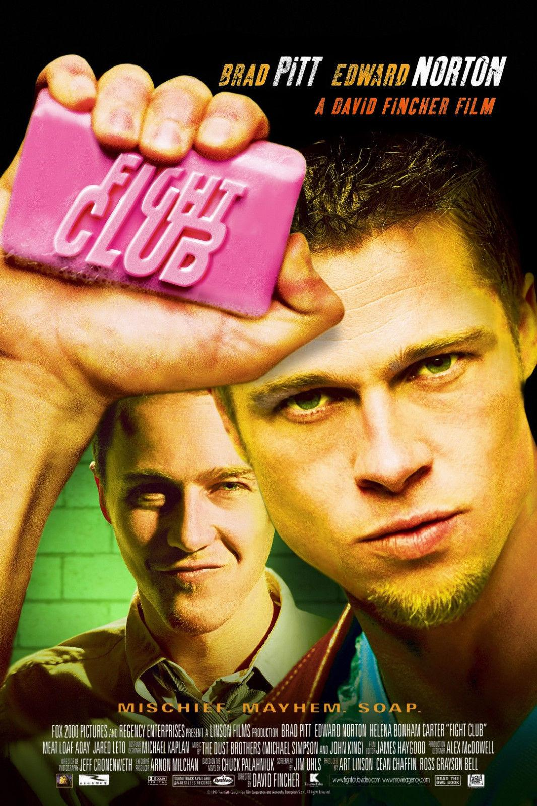

Bienvenidos
Este sitio esta dedicado a la pelicula El Club de la Pelea (Fight Club), dirigida por David Fincher y estrenada en 1999. Es una de mis peliculas favoritas y creo que merece un analisis mas profundo del que normalmente se le da.
La pelicula es un thriller psicologico basado en la novela de Chuck Palahniuk del mismo nombre. Cuenta la historia de un oficinista que no puede dormir y que empieza a cuestionar todo lo que la sociedad le impuso como "normal": el trabajo, los muebles, la ropa, la imagen.
Cuando conoce a Tyler Durden, un vendedor de jabon carismatico y filosofo a su manera, su vida cambia completamente. Juntos forman el Club de la Pelea, un grupo clandestino donde los hombres se golpean entre si como una forma de sentir algo real en un mundo que los tiene anestesiados.
El genero de la pelicula es dificil de clasificar: tiene elementos de thriller, drama, comedia negra y critica social. Lo que la hace unica es que te obliga a pensar mientras la ves, y cuando termina, te quedas pensando un rato largo.
"La primera regla del Club de la Pelea es: no hablar del Club de la Pelea."

Datos basicos
| Campo | Informacion |
|---|---|
| Titulo original | Fight Club |
| Director | David Fincher |
| Año | 1999 |
| Duracion | 139 minutos |
| Genero | Thriller / Drama |
| Pais | Estados Unidos |
| Guion | Jim Uhls (basado en la novela de Chuck Palahniuk) |
¿Por que elegí esta pelicula?
Elegí Fight Club porque es una pelicula que tiene muchas capas. La primera vez que la ves parece una historia sobre peleas y anarquia, pero en realidad habla de cosas mucho mas profundas: la identidad, el consumismo, la masculinidad, la soledad.
Ademas tiene un final sorprendente, y cuando la revees sabiendo lo que pasa te das cuenta de todos los detalles que Fincher planto desde el principio.